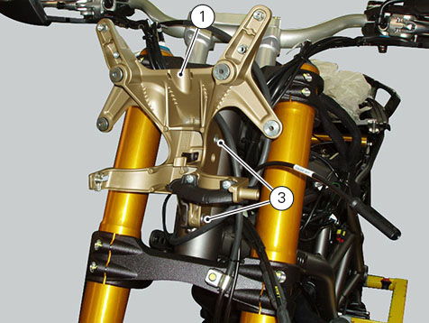
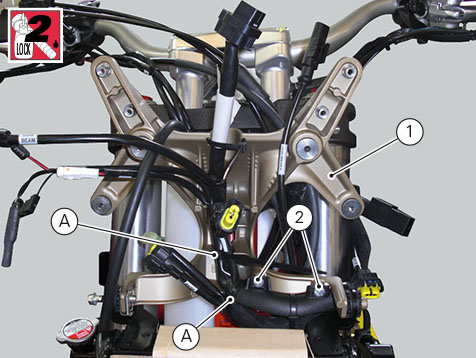
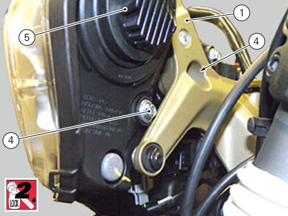
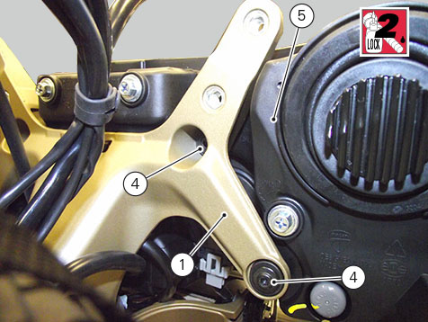

Refitting the headlight
Position the light support (1) on the steering tube and fasten it by starting the screws (2).
Tighten the screws (3) to a torque of 25 Nm ±10%.

Lay out wiring front section on headlight support (1) and fit cable rings.
Fasten wiring using ties (A).
Apply the recommended threadlocker to the screws (2).
Tighten the two screws (2) to a torque of 1.5 Nm ±10%.

Position the headlight assembly (5) on headlight support (1).
If the screws (4) are not new, smear them with specified threadlocker.
Start and tighten the screws (4) to a torque of 5 Nm ± 10%.


Refit the headlight fairing.
Refitting the headlight
fairing.
Refit the side panels (
Refitting the side panels
).